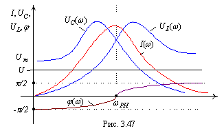

|  |
Как и следовало ожидать, при частотах ниже резонансной, когда ёмкостное сопротивление преобладает над индуктивным, сопротивление последовательного контура имеет резистивно-ёмкостный характер, а при частотах, выше резонансной, сопротивление контура становится резистивно-индуктивным, стремясь к чисто индуктивному с увеличением частоты ω. |